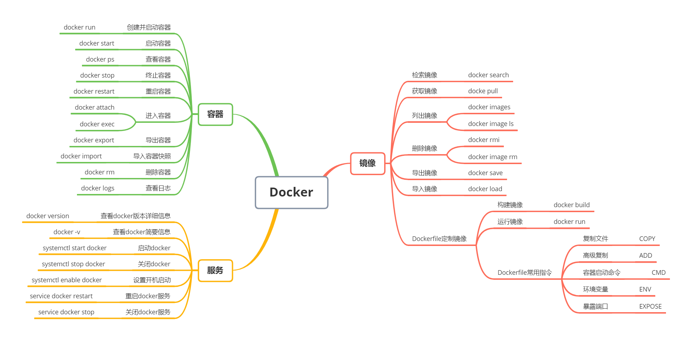
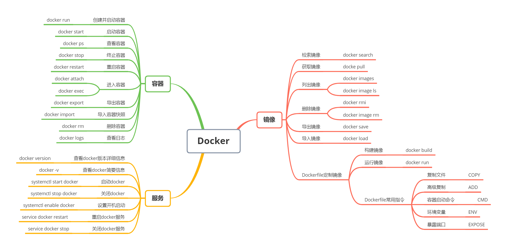

0 Docker命令简介
 

1 | Usage: docker [OPTIONS] COMMAND |
1 获取镜像
之前提到过，Docker Hub 上有大量的高质量的镜像可以用，这里我们就说一下怎么获取这些镜像。
从 Docker 镜像仓库获取镜像的命令是 docker pull。其命令格式为：
1 | $ docker pull [选项] [Docker Registry 地址[:端口号]/]仓库名[:标签] |
具体的选项可以通过 docker pull --help 命令看到，这里我们说一下镜像名称的格式。
- Docker 镜像仓库地址：地址的格式一般是
<域名/IP>[:端口号]。默认地址是 Docker Hub(docker.io)。 - 仓库名：如之前所说，这里的仓库名是两段式名称，即
<用户名>/<软件名>。对于 Docker Hub，如果不给出用户名，则默认为library，也就是官方镜像。
比如：
1 | $ docker pull ubuntu:18.04 |
上面的命令中没有给出 Docker 镜像仓库地址，因此将会从 Docker Hub （docker.io）获取镜像。而镜像名称是 ubuntu:18.04，因此将会获取官方镜像 library/ubuntu 仓库中标签为 18.04 的镜像。docker pull **命令的输出结果最后一行给出了镜像的完整名称，即： docker.io/library/ubuntu:18.04**。
从下载过程中可以看到我们之前提及的分层存储的概念，镜像是由多层存储所构成。下载也是一层层的去下载，并非单一文件。下载过程中给出了每一层的 ID 的前 12 位。并且下载结束后，给出该镜像完整的 sha256 的摘要，以确保下载一致性。
在使用上面命令的时候，你可能会发现，你所看到的层 ID 以及 sha256 的摘要和这里的不一样。这是因为官方镜像是一直在维护的，有任何新的 bug，或者版本更新，都会进行修复再以原来的标签发布，这样可以确保任何使用这个标签的用户可以获得更安全、更稳定的镜像。
如果从 Docker Hub 下载镜像非常缓慢，可以参照 镜像加速器 一节配置加速器。
运行
有了镜像后，我们就能够以这个镜像为基础启动并运行一个容器。以上面的 ubuntu:18.04 为例，如果我们打算启动里面的 bash 并且进行交互式操作的话，可以执行下面的命令。
复制
1 | $ docker run -it --rm ubuntu:18.04 bash |
docker run 就是运行容器的命令，具体格式我们会在 容器 一节进行详细讲解，我们这里简要的说明一下上面用到的参数。
-it：这是两个参数，一个是-i：交互式操作，一个是-t终端。我们这里打算进入bash执行一些命令并查看返回结果，因此我们需要交互式终端。--rm：这个参数是说容器退出后随之将其删除。默认情况下，为了排障需求，退出的容器并不会立即删除，除非手动docker rm。我们这里只是随便执行个命令，看看结果，不需要排障和保留结果，因此使用--rm可以避免浪费空间。ubuntu:18.04：这是指用ubuntu:18.04镜像为基础来启动容器。bash：放在镜像名后的是 命令，这里我们希望有个交互式 Shell，因此用的是bash。
进入容器后，我们可以在 Shell 下操作，执行任何所需的命令。这里，我们执行了 cat /etc/os-release，这是 Linux 常用的查看当前系统版本的命令，从返回的结果可以看到容器内是 Ubuntu 18.04.1 LTS 系统。
最后我们通过 exit 退出了这个容器。
2 列出镜像
要想列出已经下载下来的镜像，可以使用 docker image ls 命令。
1 | $ docker image ls |
列表包含了 仓库名、标签、镜像 ID、创建时间 以及 所占用的空间。
其中仓库名、标签在之前的基础概念章节已经介绍过了。镜像 ID 则是镜像的唯一标识，一个镜像可以对应多个 标签。因此，在上面的例子中，我们可以看到 ubuntu:18.04 和 ubuntu:bionic 拥有相同的 ID，因为它们对应的是同一个镜像。
镜像体积
如果仔细观察，会注意到，这里标识的所占用空间和在 Docker Hub 上看到的镜像大小不同。比如，ubuntu:18.04 镜像大小，在这里是 63.3MB，但是在 Docker Hub 显示的却是 25.47 MB。这是因为 Docker Hub 中显示的体积是压缩后的体积。在镜像下载和上传过程中镜像是保持着压缩状态的，因此 Docker Hub 所显示的大小是网络传输中更关心的流量大小。而 docker image ls 显示的是镜像下载到本地后，展开的大小，准确说，是展开后的各层所占空间的总和，因为镜像到本地后，查看空间的时候，更关心的是本地磁盘空间占用的大小。
另外一个需要注意的问题是，**docker image ls 列表中的镜像体积总和并非是所有镜像实际硬盘消耗**。由于 Docker 镜像是多层存储结构，并且可以继承、复用，因此不同镜像可能会因为使用相同的基础镜像，从而拥有共同的层。由于 Docker 使用 Union FS，相同的层只需要保存一份即可，因此实际镜像硬盘占用空间很可能要比这个列表镜像大小的总和要小的多。
你可以通过 docker system df 命令来便捷的查看镜像、容器、数据卷所占用的空间。
1 | $ docker system df |
虚悬镜像
上面的镜像列表中，还可以看到一个特殊的镜像，这个镜像既没有仓库名，也没有标签，均为 <none>。：
1 | <none> <none> 00285df0df87 5 days ago 342 MB |
这个镜像原本是有镜像名和标签的，原来为 mongo:3.2，随着官方镜像维护，发布了新版本后，重新 docker pull mongo:3.2 时，mongo:3.2 这个镜像名被转移到了新下载的镜像身上，而旧的镜像上的这个名称则被取消，从而成为了 <none>。除了 docker pull 可能导致这种情况，**docker build 也同样可以导致这种现象。由于新旧镜像同名，旧镜像名称被取消，从而出现仓库名、标签均为 <none> 的镜像**。这类无标签镜像也被称为 虚悬镜像(dangling image) ，可以用下面的命令专门显示这类镜像：
1 | $ docker image ls -f dangling=true |
一般来说，虚悬镜像已经失去了存在的价值，是可以随意删除的，可以用下面的命令删除。
1 | $ docker image prune |
中间层镜像
为了加速镜像构建、重复利用资源，Docker 会利用 中间层镜像。所以在使用一段时间后，可能会看到一些依赖的中间层镜像。默认的 docker image ls 列表中只会显示顶层镜像，如果希望显示包括中间层镜像在内的所有镜像的话，需要加 -a 参数。
复制
1 | $ docker image ls -a |
这样会看到很多无标签的镜像，与之前的虚悬镜像不同，这些无标签的镜像很多都是中间层镜像，是其它镜像所依赖的镜像。这些无标签镜像不应该删除，否则会导致上层镜像因为依赖丢失而出错。实际上，这些镜像也没必要删除，因为之前说过，相同的层只会存一遍，而这些镜像是别的镜像的依赖，因此并不会因为它们被列出来而多存了一份，无论如何你也会需要它们。只要删除那些依赖它们的镜像后，这些依赖的中间层镜像也会被连带删除。
列出部分镜像
不加任何参数的情况下，docker image ls 会列出所有顶层镜像，但是有时候我们只希望列出部分镜像。docker image ls 有好几个参数可以帮助做到这个事情。
根据仓库名列出镜像
1
2
3
4$ docker image ls ubuntu
REPOSITORY TAG IMAGE ID CREATED SIZE
ubuntu 18.04 329ed837d508 3 days ago 63.3MB
ubuntu bionic 329ed837d508 3 days ago 63.3MB列出特定的某个镜像，也就是说指定仓库名和标签
1
2
3$ docker image ls ubuntu:18.04
REPOSITORY TAG IMAGE ID CREATED SIZE
ubuntu 18.04 329ed837d508 3 days ago 63.3MB除此以外，**
docker image ls还支持强大的过滤器参数--filter，或者简写-f**。之前我们已经看到了使用过滤器来列出虚悬镜像的用法，它还有更多的用法。比如，我们希望看到在mongo:3.2之后建立的镜像，可以用下面的命令：1
2
3
4$ docker image ls -f since=mongo:3.2
REPOSITORY TAG IMAGE ID CREATED SIZE
redis latest 5f515359c7f8 5 days ago 183 MB
nginx latest 05a60462f8ba 5 days ago 181 MB想查看某个位置之前的镜像也可以，只需要把
since换成before即可。此外，如果镜像构建时，定义了
LABEL，还可以通过LABEL来过滤。1
2$ docker image ls -f label=com.example.version=0.1
...
以特定格式显示
默认情况下，docker image ls 会输出一个完整的表格，但是我们并非所有时候都会需要这些内容。比如，刚才删除虚悬镜像的时候，我们需要利用 docker image ls 把所有的虚悬镜像的 ID 列出来，然后才可以交给 docker image rm 命令作为参数来删除指定的这些镜像，这个时候就用到了 -q 参数。
1 | $ docker image ls -q |
--filter 配合 -q 产生出指定范围的 ID 列表，然后送给另一个 docker 命令作为参数，从而针对这组实体成批的进行某种操作的做法在 Docker 命令行使用过程中非常常见，不仅仅是镜像，将来我们会在各个命令中看到这类搭配以完成很强大的功能。因此每次在文档看到过滤器后，可以多注意一下它们的用法。
另外一些时候，我们可能只是对表格的结构不满意，希望自己组织列；或者不希望有标题，这样方便其它程序解析结果等，这就用到了 Go 的模板语法。
比如，下面的命令会直接列出镜像结果，并且只包含镜像ID和仓库名：
1 | $ docker image ls --format "{{.ID}}: {{.Repository}}" |
或者打算以表格等距显示，并且有标题行，和默认一样，不过自己定义列：
1 | $ docker image ls --format "table {{.ID}}\t{{.Repository}}\t{{.Tag}}" |
3 删除本地镜像
如果要删除本地的镜像，可以使用 docker image rm 命令，其格式为：
1 | $ docker image rm [选项] <镜像1> [<镜像2> ...] |
用 ID、镜像名、摘要删除镜像
其中，<镜像> 可以是 镜像短 ID、镜像长 ID、镜像名 或者 镜像摘要。
比如我们有这么一些镜像：
1 | $ docker image ls |
我们可以用镜像的完整 ID，也称为 长 ID，来删除镜像。使用脚本的时候可能会用长 ID，但是人工输入就太累了，所以更多的时候是用 短 ID 来删除镜像。docker image ls 默认列出的就已经是短 ID 了，一般取前3个字符以上，只要足够区分于别的镜像就可以了。
比如这里，如果我们要删除 redis:alpine 镜像，可以执行：
1 | $ docker image rm 501 |
我们也可以用镜像名，也就是 <仓库名>:<标签>，来删除镜像。
1 | $ docker image rm centos |
当然，更精确的是使用 镜像摘要 删除镜像。
1 | $ docker image ls --digests |
Untagged 和 Deleted
如果观察上面这几个命令的运行输出信息的话，你会注意到删除行为分为两类，一类是 Untagged，另一类是 Deleted。我们之前介绍过，镜像的唯一标识是其 ID 和摘要，而一个镜像可以有多个标签。
因此当我们使用上面命令删除镜像的时候，实际上是在要求删除某个标签的镜像。所以首先需要做的是将满足我们要求的所有镜像标签都取消，这就是我们看到的 Untagged 的信息。因为一个镜像可以对应多个标签，因此当我们删除了所指定的标签后，可能还有别的标签指向了这个镜像，如果是这种情况，那么 Delete 行为就不会发生。所以并非所有的 docker image rm 都会产生删除镜像的行为，有可能仅仅是取消了某个标签而已。
当该镜像所有的标签都被取消了，该镜像很可能会失去了存在的意义，因此会触发删除行为。镜像是多层存储结构，因此在删除的时候也是从上层向基础层方向依次进行判断删除。镜像的多层结构让镜像复用变得非常容易，因此很有可能某个其它镜像正依赖于当前镜像的某一层。这种情况，依旧不会触发删除该层的行为。直到没有任何层依赖当前层时，才会真实的删除当前层。这就是为什么，有时候会奇怪，为什么明明没有别的标签指向这个镜像，但是它还是存在的原因，也是为什么有时候会发现所删除的层数和自己 docker pull 看到的层数不一样的原因。
除了镜像依赖以外，还需要注意的是容器对镜像的依赖。如果有用这个镜像启动的容器存在（即使容器没有运行），那么同样不可以删除这个镜像。之前讲过，容器是以镜像为基础，再加一层容器存储层，组成这样的多层存储结构去运行的。因此该镜像如果被这个容器所依赖的，那么删除必然会导致故障。如果这些容器是不需要的，应该先将它们删除，然后再来删除镜像。
用 docker image ls 命令来配合
像其它可以承接多个实体的命令一样，可以使用 docker image ls -q 来配合使用 docker image rm，这样可以成批的删除希望删除的镜像。我们在“镜像列表”章节介绍过很多过滤镜像列表的方式都可以拿过来使用。
比如，我们需要删除所有仓库名为 redis 的镜像：
1 | $ docker image rm $(docker image ls -q redis) |
或者删除所有在 mongo:3.2 之前的镜像：
1 | $ docker image rm $(docker image ls -q -f before=mongo:3.2) |
充分利用你的想象力和 Linux 命令行的强大，你可以完成很多非常赞的功能。
4 利用 commit 理解镜像构成
注意：如果您是初学者，您可以暂时跳过后面的内容，直接学习 容器 一节。
注意： docker commit 命令除了学习之外，还有一些特殊的应用场合，比如被入侵后保存现场等。但是，不要使用 docker commit 定制镜像，定制镜像应该使用 Dockerfile 来完成。如果你想要定制镜像请查看下一小节。
镜像是容器的基础，每次执行 docker run 的时候都会指定哪个镜像作为容器运行的基础。在之前的例子中，我们所使用的都是来自于 Docker Hub 的镜像。直接使用这些镜像是可以满足一定的需求，而当这些镜像无法直接满足需求时，我们就需要定制这些镜像。接下来的几节就将讲解如何定制镜像。
回顾一下之前我们学到的知识，镜像是多层存储，每一层是在前一层的基础上进行的修改；而容器同样也是多层存储，是在以镜像为基础层，在其基础上加一层作为容器运行时的存储层。
现在让我们以定制一个 Web 服务器为例子，来讲解镜像是如何构建的。
1 | $ docker run --name webserver -d -p 80:80 nginx |
这条命令会用 nginx 镜像启动一个容器，命名为 webserver，并且映射了 80 端口，这样我们可以用浏览器去访问这个 nginx 服务器。
如果是在本机运行的 Docker，那么可以直接访问：http://localhost ，如果是在虚拟机、云服务器上安装的 Docker，则需要将 localhost 换为虚拟机地址或者实际云服务器地址。
直接用浏览器访问的话，我们会看到默认的 Nginx 欢迎页面。
现在，假设我们非常不喜欢这个欢迎页面，我们希望改成欢迎 Docker 的文字，我们可以使用 docker exec 命令进入容器，修改其内容。
1 | $ docker exec -it webserver bash |
我们以交互式终端方式进入 webserver 容器，并执行了 bash 命令，也就是获得一个可操作的 Shell。
然后，我们用 <h1>Hello, Docker!</h1> 覆盖了 /usr/share/nginx/html/index.html 的内容。
现在我们再刷新浏览器的话，会发现内容被改变了。
我们修改了容器的文件，也就是改动了容器的存储层。我们可以通过 docker diff 命令看到具体的改动。
1 | $ docker diff webserver |
现在我们定制好了变化，我们希望能将其保存下来形成镜像。
要知道，当我们运行一个容器的时候（如果不使用卷的话），我们做的任何文件修改都会被记录于容器存储层里。而 Docker 提供了一个 docker commit 命令，可以将容器的存储层保存下来成为镜像。换句话说，就是在原有镜像的基础上，再叠加上容器的存储层，并构成新的镜像。以后我们运行这个新镜像的时候，就会拥有原有容器最后的文件变化。
docker commit 的语法格式为：
1 | $ docker commit [选项] <容器ID或容器名> [<仓库名>[:<标签>]] |
我们可以用下面的命令将容器保存为镜像：
1 | $ docker commit \ |
其中 --author 是指定修改的作者，而 --message 则是记录本次修改的内容。这点和 git 版本控制相似，不过这里这些信息可以省略留空。
我们可以在 docker image ls 中看到这个新定制的镜像：
1 | $ docker image ls nginx |
我们还可以用 docker history 具体查看镜像内的历史记录，如果比较 nginx:latest 的历史记录，我们会发现新增了我们刚刚提交的这一层。
1 | $ docker history nginx:v2 |
新的镜像定制好后，我们可以来运行这个镜像。
1 | docker run --name web2 -d -p 81:80 nginx:v2 |
这里我们命名为新的服务为 web2，并且映射到 81 端口。访问 http://localhost:81 看到结果，其内容应该和之前修改后的 webserver 一样。
至此，我们第一次完成了定制镜像，使用的是 docker commit 命令，手动操作给旧的镜像添加了新的一层，形成新的镜像，对镜像多层存储应该有了更直观的感觉。
慎用 docker commit
使用 docker commit 命令虽然可以比较直观的帮助理解镜像分层存储的概念，但是实际环境中并不会这样使用。
首先，如果仔细观察之前的 docker diff webserver 的结果，你会发现除了真正想要修改的 /usr/share/nginx/html/index.html 文件外，由于命令的执行，还有很多文件被改动或添加了。这还仅仅是最简单的操作，如果是安装软件包、编译构建，那会有大量的无关内容被添加进来，将会导致镜像极为臃肿。
此外，使用 docker commit 意味着所有对镜像的操作都是黑箱操作，生成的镜像也被称为 黑箱镜像，换句话说，就是除了制作镜像的人知道执行过什么命令、怎么生成的镜像，别人根本无从得知。而且，即使是这个制作镜像的人，过一段时间后也无法记清具体的操作。这种黑箱镜像的维护工作是非常痛苦的。
而且，回顾之前提及的镜像所使用的分层存储的概念，除当前层外，之前的每一层都是不会发生改变的，换句话说，任何修改的结果仅仅是在当前层进行标记、添加、修改，而不会改动上一层。如果使用 docker commit 制作镜像，以及后期修改的话，每一次修改都会让镜像更加臃肿一次，所删除的上一层的东西并不会丢失，会一直如影随形的跟着这个镜像，即使根本无法访问到。这会让镜像更加臃肿。
5 使用 Dockerfile 定制镜像
从刚才的 docker commit 的学习中，我们可以了解到，镜像的定制实际上就是定制每一层所添加的配置、文件。如果我们可以把每一层修改、安装、构建、操作的命令都写入一个脚本，用这个脚本来构建、定制镜像，那么之前提及的无法重复的问题、镜像构建透明性的问题、体积的问题就都会解决。这个脚本就是 Dockerfile。
Dockerfile 是一个文本文件，其内包含了一条条的 指令(Instruction)，每一条指令构建一层，因此每一条指令的内容，就是描述该层应当如何构建。
还以之前定制 nginx 镜像为例，这次我们使用 Dockerfile 来定制。
在一个空白目录中，建立一个文本文件，并命名为 Dockerfile：
1 | $ mkdir mynginx |
其内容为：
1 | FROM nginx |
这个 Dockerfile 很简单，一共就两行。涉及到了两条指令，FROM 和 RUN。
FROM 指定基础镜像
所谓定制镜像，那一定是以一个镜像为基础，在其上进行定制。就像我们之前运行了一个 nginx 镜像的容器，再进行修改一样，基础镜像是必须指定的。而 FROM 就是指定 基础镜像，因此一个 Dockerfile 中 FROM 是必备的指令，并且必须是第一条指令。
在 Docker Hub 上有非常多的高质量的官方镜像，有可以直接拿来使用的服务类的镜像，如 nginx、redis、mongo、mysql、httpd、php、tomcat 等；也有一些方便开发、构建、运行各种语言应用的镜像，如 node、openjdk、python、ruby、golang 等。可以在其中寻找一个最符合我们最终目标的镜像为基础镜像进行定制。
如果没有找到对应服务的镜像，官方镜像中还提供了一些更为基础的操作系统镜像，如 ubuntu、debian、centos、fedora、alpine 等，这些操作系统的软件库为我们提供了更广阔的扩展空间。
除了选择现有镜像为基础镜像外，Docker 还存在一个特殊的镜像，名为 scratch。这个镜像是虚拟的概念，并不实际存在，它表示一个空白的镜像。
1 | FROM scratch |
如果你以 scratch 为基础镜像的话，意味着你不以任何镜像为基础，接下来所写的指令将作为镜像第一层开始存在。
不以任何系统为基础，直接将可执行文件复制进镜像的做法并不罕见，对于 Linux 下静态编译的程序来说，并不需要有操作系统提供运行时支持，所需的一切库都已经在可执行文件里了，因此直接 FROM scratch 会让镜像体积更加小巧。使用 Go 语言 开发的应用很多会使用这种方式来制作镜像，这也是有人认为 Go 是特别适合容器微服务架构的语言的原因之一。
RUN 执行命令
RUN 指令是用来执行命令行命令的。由于命令行的强大能力，RUN 指令在定制镜像时是最常用的指令之一。其格式有两种：
shell 格式：
RUN <命令>，就像直接在命令行中输入的命令一样。刚才写的 Dockerfile 中的RUN指令就是这种格式。1
RUN echo '<h1>Hello, Docker!</h1>' > /usr/share/nginx/html/index.html
exec 格式：
RUN ["可执行文件", "参数1", "参数2"]，这更像是函数调用中的格式。
既然 RUN 就像 Shell 脚本一样可以执行命令，那么我们是否就可以像 Shell 脚本一样把每个命令对应一个 RUN 呢？比如这样：
1 | FROM debian:stretch |
之前说过，Dockerfile 中每一个指令都会建立一层，RUN 也不例外。每一个 RUN 的行为，就和刚才我们手工建立镜像的过程一样：新建立一层，在其上执行这些命令，执行结束后，commit 这一层的修改，构成新的镜像。
而上面的这种写法，创建了 7 层镜像。这是完全没有意义的，而且很多运行时不需要的东西，都被装进了镜像里，比如编译环境、更新的软件包等等。结果就是产生非常臃肿、非常多层的镜像，不仅仅增加了构建部署的时间，也很容易出错。 这是很多初学 Docker 的人常犯的一个错误。
Union FS 是有最大层数限制的，比如 AUFS，曾经是最大不得超过 42 层，现在是不得超过 127 层。
上面的 Dockerfile 正确的写法应该是这样：
1 | FROM debian:stretch |
首先，之前所有的命令只有一个目的，就是编译、安装 redis 可执行文件。因此没有必要建立很多层，这只是一层的事情。因此，这里没有使用很多个 RUN 一一对应不同的命令，而是仅仅使用一个 RUN 指令，并使用 && 将各个所需命令串联起来。将之前的 7 层，简化为了 1 层。在撰写 Dockerfile 的时候，要经常提醒自己，这并不是在写 Shell 脚本，而是在定义每一层该如何构建。
并且，这里为了格式化还进行了换行。Dockerfile 支持 Shell 类的行尾添加 \ 的命令换行方式，以及行首 # 进行注释的格式。良好的格式，比如换行、缩进、注释等，会让维护、排障更为容易，这是一个比较好的习惯。
此外，还可以看到这一组命令的最后添加了清理工作的命令，删除了为了编译构建所需要的软件，清理了所有下载、展开的文件，并且还清理了 apt 缓存文件。这是很重要的一步，我们之前说过，镜像是多层存储，每一层的东西并不会在下一层被删除，会一直跟随着镜像。因此镜像构建时，一定要确保每一层只添加真正需要添加的东西，任何无关的东西都应该清理掉。
很多人初学 Docker 制作出了很臃肿的镜像的原因之一，就是忘记了每一层构建的最后一定要清理掉无关文件。
构建镜像
好了，让我们再回到之前定制的 nginx 镜像的 Dockerfile 来。现在我们明白了这个 Dockerfile 的内容，那么让我们来构建这个镜像吧。
在 Dockerfile 文件所在目录执行：
1 | $ docker build -t nginx:v3 . |
从命令的输出结果中，我们可以清晰的看到镜像的构建过程。在 Step 2 中，如同我们之前所说的那样，RUN 指令启动了一个容器 9cdc27646c7b，执行了所要求的命令，并最后提交了这一层 44aa4490ce2c，随后删除了所用到的这个容器 9cdc27646c7b。
这里我们使用了 docker build 命令进行镜像构建。其格式为：
1 | docker build [选项] <上下文路径/URL/-> |
在这里我们指定了最终镜像的名称 -t nginx:v3，构建成功后，我们可以像之前运行 nginx:v2 那样来运行这个镜像，其结果会和 nginx:v2 一样。
镜像构建上下文（Context）
如果注意，会看到 docker build 命令最后有一个 .。. 表示当前目录，而 Dockerfile 就在当前目录，因此不少初学者以为这个路径是在指定 Dockerfile 所在路径，这么理解其实是不准确的。如果对应上面的命令格式，你可能会发现，这是在指定 上下文路径。那么什么是上下文呢？
首先我们要理解 docker build 的工作原理。Docker 在运行时分为 Docker 引擎（也就是服务端守护进程）和客户端工具。Docker 的引擎提供了一组 REST API，被称为 Docker Remote API，而如 docker 命令这样的客户端工具，则是通过这组 API 与 Docker 引擎交互，从而完成各种功能。因此，虽然表面上我们好像是在本机执行各种 docker 功能，但实际上，一切都是使用的远程调用形式在服务端（Docker 引擎）完成。也因为这种 C/S 设计，让我们操作远程服务器的 Docker 引擎变得轻而易举。
当我们进行镜像构建的时候，并非所有定制都会通过 RUN 指令完成，经常会需要将一些本地文件复制进镜像，比如通过 COPY 指令、ADD 指令等。而 docker build 命令构建镜像，其实并非在本地构建，而是在服务端，也就是 Docker 引擎中构建的。那么在这种客户端/服务端的架构中，如何才能让服务端获得本地文件呢？
这就引入了上下文的概念。当构建的时候，用户会指定构建镜像上下文的路径，docker build 命令得知这个路径后，会将路径下的所有内容打包，然后上传给 Docker 引擎。这样 Docker 引擎收到这个上下文包后，展开就会获得构建镜像所需的一切文件。
如果在 Dockerfile 中这么写：
1 | COPY ./package.json /app/ |
这并不是要复制执行 docker build 命令所在的目录下的 package.json，也不是复制 Dockerfile 所在目录下的 package.json，而是复制 上下文（context） 目录下的 package.json。
因此，COPY 这类指令中的源文件的路径都是相对路径。这也是初学者经常会问的为什么 COPY ../package.json /app 或者 COPY /opt/xxxx /app 无法工作的原因，因为这些路径已经超出了上下文的范围，Docker 引擎无法获得这些位置的文件。如果真的需要那些文件，应该将它们复制到上下文目录中去。
现在就可以理解刚才的命令 docker build -t nginx:v3 . 中的这个 .，实际上是在指定上下文的目录，docker build 命令会将该目录下的内容打包交给 Docker 引擎以帮助构建镜像。
如果观察 docker build 输出，我们其实已经看到了这个发送上下文的过程：
1 | $ docker build -t nginx:v3 . |
理解构建上下文对于镜像构建是很重要的，避免犯一些不应该的错误。比如有些初学者在发现 COPY /opt/xxxx /app 不工作后，于是干脆将 Dockerfile 放到了硬盘根目录去构建，结果发现 docker build 执行后，在发送一个几十 GB 的东西，极为缓慢而且很容易构建失败。那是因为这种做法是在让 docker build 打包整个硬盘，这显然是使用错误。
一般来说，应该会将 Dockerfile 置于一个空目录下，或者项目根目录下。如果该目录下没有所需文件，那么应该把所需文件复制一份过来。如果目录下有些东西确实不希望构建时传给 Docker 引擎，那么可以用 .gitignore 一样的语法写一个 .dockerignore，该文件是用于剔除不需要作为上下文传递给 Docker 引擎的。
那么为什么会有人误以为 . 是指定 Dockerfile 所在目录呢？这是因为在默认情况下，如果不额外指定 Dockerfile 的话，会将上下文目录下的名为 Dockerfile 的文件作为 Dockerfile。
这只是默认行为，实际上 Dockerfile 的文件名并不要求必须为 Dockerfile，而且并不要求必须位于上下文目录中，比如**可以用 -f ../Dockerfile.php 参数指定某个文件作为 Dockerfile**。
当然，一般大家习惯性的会使用默认的文件名 Dockerfile，以及会将其置于镜像构建上下文目录中。
其它 docker build 的用法
直接用 Git repo 进行构建
或许你已经注意到了，docker build 还支持从 URL 构建，比如可以直接从 Git repo 中构建：
1 | # $env:DOCKER_BUILDKIT=0 |
这行命令指定了构建所需的 Git repo，并且指定分支为 master，构建目录为 /amd64/hello-world/，然后 Docker 就会自己去 git clone 这个项目、切换到指定分支、并进入到指定目录后开始构建。
用给定的 tar 压缩包构建
1 | $ docker build http://server/context.tar.gz |
如果所给出的 URL 不是个 Git repo，而是个 tar 压缩包，那么 Docker 引擎会下载这个包，并自动解压缩，以其作为上下文，开始构建。
从标准输入中读取 Dockerfile 进行构建
1 | docker build - < Dockerfile |
或
1 | cat Dockerfile | docker build - |
如果标准输入传入的是文本文件，则将其视为 Dockerfile，并开始构建。这种形式由于直接从标准输入中读取 Dockerfile 的内容，它没有上下文，因此不可以像其他方法那样可以将本地文件 COPY 进镜像之类的事情。
从标准输入中读取上下文压缩包进行构建
1 | $ docker build - < context.tar.gz |
如果发现标准输入的文件格式是 gzip、bzip2 以及 xz 的话，将会使其为上下文压缩包，直接将其展开，将里面视为上下文，并开始构建。
6 Dockerfile 指令详解
我们已经介绍了 FROM，RUN，还提及了 COPY, ADD，其实 Dockerfile 功能很强大，它提供了十多个指令。下面我们继续讲解其他的指令。
Docker 镜像由多个只读层组成，每个层都对应 Dockerfile 中的一个指令。以下这些 Dockerfile 指令将会创建新的层：
RUN：每个RUN命令都会在镜像中创建一个新的层。由于这让镜像变得较大，因此常常会看到多个RUN命令链在一起以减少创建的层数。COPY：COPY指令会将文件或目录从 Docker 构建上下文复制到新的一层上，然后将它们添加到 Dockerfile 中所指定的路径。ADD：就像COPY一样,ADD指令会在一个新的层上复制文件，并对文件（如果是压缩的话，会进行自动解压缩）进行提取。另一方面，由于ADD命令有些额外的功能（比如能下载远程的 URLs），通常建议在文件复制时尽量使用COPY。WORKDIR：如果指定的工作目录不存在，这个命令将会创建该目录，并在新的层上创建。VOLUME: 此命令也会在 Docker 镜像中创建新的层。USER：此命令用于设定下一条RUN,CMD,ENTRYPOINT指令运行时的 UID。LABEL：此命令添加元数据到镜像，创建一个新的层。虽然
ENTRYPOINT和CMD指定了容器的默认执行命令，但它们不会创建新的层，因为它们不会改变镜像的文件系统。同样，ENV指令用来设置环境变量，也不会创建新的镜像层。这就是 Dockerfile 中用来创建新层的主要指令, 使用合理可有效改进创建的 Docker 镜像的大小和构建时间。
6.1 COPY 复制文件
格式：
COPY [--chown=<user>:<group>] <源路径>... <目标路径>COPY [--chown=<user>:<group>] ["<源路径1>",... "<目标路径>"]
和 RUN 指令一样，也有两种格式，一种类似于命令行，一种类似于函数调用。
COPY 指令将从构建上下文目录中 <源路径> 的文件/目录复制到新的一层的镜像内的 <目标路径> 位置。比如：
1 | COPY package.json /usr/src/app/ |
<源路径> 可以是多个，甚至可以是通配符，其通配符规则要满足 Go 的 filepath.Match 规则，如：
1 | COPY hom* /mydir/ |
<目标路径> 可以是容器内的绝对路径，也可以是相对于工作目录的相对路径（工作目录可以用 WORKDIR 指令来指定）。目标路径不需要事先创建，如果目录不存在会在复制文件前先行创建缺失目录。
此外，还需要注意一点，使用 COPY 指令，源文件的各种元数据都会保留。比如读、写、执行权限、文件变更时间等。这个特性对于镜像定制很有用。特别是构建相关文件都在使用 Git 进行管理的时候。
在使用该指令的时候还可以加上 --chown=<user>:<group> 选项来改变文件的所属用户及所属组。
1 | COPY --chown=55:mygroup files* /mydir/ |
如果源路径为文件夹，复制的时候不是直接复制该文件夹，而是将文件夹中的内容复制到目标路径。
6.2 ADD 更高级的复制文件
ADD 指令和 COPY 的格式和性质基本一致。但是在 COPY 基础上增加了一些功能。
比如 <源路径> 可以是一个 URL，这种情况下，Docker 引擎会试图去下载这个链接的文件放到 <目标路径> 去。下载后的文件权限自动设置为 600，如果这并不是想要的权限，那么还需要增加额外的一层 RUN 进行权限调整，另外，如果下载的是个压缩包，需要解压缩，也一样还需要额外的一层 RUN 指令进行解压缩。所以不如直接使用 RUN 指令，然后使用 wget 或者 curl 工具下载，处理权限、解压缩、然后清理无用文件更合理。因此，这个功能其实并不实用，而且不推荐使用。
如果 <源路径> 为一个 tar 压缩文件的话，压缩格式为 gzip, bzip2 以及 xz 的情况下，ADD 指令将会自动解压缩这个压缩文件到 <目标路径> 去。
在某些情况下，这个自动解压缩的功能非常有用，比如官方镜像 ubuntu 中：
1 | FROM scratch |
但在某些情况下，如果我们真的是希望复制个压缩文件进去，而不解压缩，这时就不可以使用 ADD 命令了。
在 Docker 官方的 Dockerfile 最佳实践文档 中要求，尽可能的使用 COPY，因为 COPY 的语义很明确，就是复制文件而已，而 ADD 则包含了更复杂的功能，其行为也不一定很清晰。最适合使用 ADD 的场合，就是所提及的需要自动解压缩的场合。
另外需要注意的是，ADD 指令会令镜像构建缓存失效，从而可能会令镜像构建变得比较缓慢。
因此在 COPY 和 ADD 指令中选择的时候，可以遵循这样的原则，所有的文件复制均使用 COPY 指令，仅在需要自动解压缩的场合使用 ADD。
在使用该指令的时候还可以加上 --chown=<user>:<group> 选项来改变文件的所属用户及所属组。
1 | ADD --chown=55:mygroup files* /mydir/ |
6.3 CMD 容器启动命令
CMD 指令的格式和 RUN 相似，也是两种格式：
shell格式：CMD <命令>exec格式：CMD ["可执行文件", "参数1", "参数2"...]- 参数列表格式：
CMD ["参数1", "参数2"...]。在指定了ENTRYPOINT指令后，用CMD指定具体的参数。
之前介绍容器的时候曾经说过，Docker 不是虚拟机，容器就是进程。既然是进程，那么在启动容器的时候，需要指定所运行的程序及参数。**CMD 指令就是用于指定默认的容器主进程的启动命令的**。
在运行时可以指定新的命令来替代镜像设置中的这个默认命令，比如，ubuntu 镜像默认的 CMD 是 /bin/bash，如果我们直接 docker run -it ubuntu 的话，会直接进入 bash。我们也可以在运行时指定运行别的命令，如 docker run -it ubuntu cat /etc/os-release。这就是用 cat /etc/os-release 命令替换了默认的 /bin/bash 命令了，输出了系统版本信息。
在指令格式上，一般推荐使用 exec 格式，这类格式在解析时会被解析为 JSON 数组，因此一定要使用双引号 "，而不要使用单引号。
如果使用 shell 格式的话，实际的命令会被包装为 sh -c 的参数的形式进行执行。比如：
1 | CMD echo $HOME |
在实际执行中，会将其变更为：
1 | CMD [ "sh", "-c", "echo $HOME" ] |
这就是为什么我们可以使用环境变量的原因，因为这些环境变量会被 shell 进行解析处理。
提到 CMD 就不得不提容器中应用在前台执行和后台执行的问题。这是初学者常出现的一个混淆。
Docker 不是虚拟机，容器中的应用都应该以前台执行，而不是像虚拟机、物理机里面那样，用 systemd 去启动后台服务，容器内没有后台服务的概念。
一些初学者将 CMD 写为：
1 | CMD service nginx start |
然后发现容器执行后就立即退出了。甚至在容器内去使用 systemctl 命令结果却发现根本执行不了。这就是因为没有搞明白前台、后台的概念，没有区分容器和虚拟机的差异，依旧在以传统虚拟机的角度去理解容器。
对于容器而言，其启动程序就是容器应用进程，容器就是为了主进程而存在的，主进程退出，容器就失去了存在的意义，从而退出，其它辅助进程不是它需要关心的东西。
而使用 service nginx start 命令，则是希望 init 系统以后台守护进程的形式启动 nginx 服务。而刚才说了 CMD service nginx start 会被理解为 CMD [ "sh", "-c", "service nginx start"]，因此主进程实际上是 sh。那么当 service nginx start 命令结束后，sh 也就结束了，sh 作为主进程退出了，自然就会令容器退出。
正确的做法是直接执行 nginx 可执行文件，并且要求以前台形式运行。比如：
1 | CMD ["nginx", "-g", "daemon off;"] |
6.4 ENTRYPOINT 入口点
ENTRYPOINT 的格式和 RUN 指令格式一样，分为 exec 格式和 shell 格式。
ENTRYPOINT 的目的和 CMD 一样，都是在指定容器启动程序及参数。**ENTRYPOINT 在运行时也可以替代，不过比 CMD 要略显繁琐，需要通过 docker run 的参数 --entrypoint 来指定**。
当指定了 ENTRYPOINT 后，CMD 的含义就发生了改变，不再是直接的运行其命令，而是将 CMD 的内容作为参数传给 ENTRYPOINT 指令，换句话说实际执行时，将变为：
1 | <ENTRYPOINT> "<CMD>" |
那么有了 CMD 后，为什么还要有 ENTRYPOINT 呢？这种 <ENTRYPOINT> "<CMD>" 有什么好处么？让我们来看几个场景。
场景一：让镜像变成像命令一样使用
假设我们需要一个得知自己当前公网 IP 的镜像，那么可以先用 CMD 来实现：
1 | FROM ubuntu:18.04 |
假如我们使用 docker build -t myip . 来构建镜像的话，如果我们需要查询当前公网 IP，只需要执行：
1 | $ docker run myip |
嗯，这么看起来好像可以直接把镜像当做命令使用了，不过命令总有参数，如果我们希望加参数呢？比如从上面的 CMD 中可以看到实质的命令是 curl，那么如果我们希望显示 HTTP 头信息，就需要加上 -i 参数。那么我们可以直接加 -i 参数给 docker run myip 么？
1 | $ docker run myip -i |
我们可以看到可执行文件找不到的报错，executable file not found。之前我们说过，跟在镜像名后面的是 command，运行时会替换 CMD 的默认值。因此这里的 -i 替换了原来的 CMD，而不是添加在原来的 curl -s http://myip.ipip.net 后面。而 -i 根本不是命令，所以自然找不到。
那么如果我们希望加入 -i 这参数，我们就必须重新完整的输入这个命令：
1 | $ docker run myip curl -s http://myip.ipip.net -i |
这显然不是很好的解决方案，而使用 ENTRYPOINT 就可以解决这个问题。现在我们重新用 ENTRYPOINT 来实现这个镜像：
1 | FROM ubuntu:18.04 |
这次我们再来尝试直接使用 docker run myip -i：
1 | $ docker run myip |
可以看到，这次成功了。这是因为当存在 ENTRYPOINT 后，CMD 的内容将会作为参数传给 ENTRYPOINT，而这里 -i 就是新的 CMD，因此会作为参数传给 curl，从而达到了我们预期的效果。
场景二：应用运行前的准备工作
启动容器就是启动主进程，但有些时候，启动主进程前，需要一些准备工作。
比如 mysql 类的数据库，可能需要一些数据库配置、初始化的工作，这些工作要在最终的 mysql 服务器运行之前解决。
此外，可能希望避免使用 root 用户去启动服务，从而提高安全性，而在启动服务前还需要以 root 身份执行一些必要的准备工作，最后切换到服务用户身份启动服务。或者除了服务外，其它命令依旧可以使用 root 身份执行，方便调试等。
这些准备工作是和容器 CMD 无关的，无论 CMD 为什么，都需要事先进行一个预处理的工作。这种情况下，可以写一个脚本，然后放入 ENTRYPOINT 中去执行，而这个脚本会将接到的参数（也就是 <CMD>）作为命令，在脚本最后执行。比如官方镜像 redis 中就是这么做的：
1 | FROM alpine:3.4 |
可以看到其中为了 redis 服务创建了 redis 用户，并在最后指定了 ENTRYPOINT 为 docker-entrypoint.sh 脚本。
1 |
|
该脚本的内容就是根据 CMD 的内容来判断，如果是 redis-server 的话，则切换到 redis 用户身份启动服务器，否则依旧使用 root 身份执行。比如：
1 | $ docker run -it redis id |
6.5 ENV 设置环境变量
格式有两种：
ENV <key> <value>ENV <key1>=<value1> <key2>=<value2>...
这个指令很简单，就是设置环境变量而已，无论是后面的其它指令，如 RUN，还是运行时的应用，都可以直接使用这里定义的环境变量。
1 | ENV VERSION=1.0 DEBUG=on \ |
这个例子中演示了如何换行，以及对含有空格的值用双引号括起来的办法，这和 Shell 下的行为是一致的。
定义了环境变量，那么在后续的指令中，就可以使用这个环境变量。比如在官方 node 镜像 Dockerfile 中，就有类似这样的代码：
1 | ENV NODE_VERSION 7.2.0 |
在这里先定义了环境变量 NODE_VERSION，其后的 RUN 这层里，多次使用 $NODE_VERSION 来进行操作定制。可以看到，将来升级镜像构建版本的时候，只需要更新 7.2.0 即可，Dockerfile 构建维护变得更轻松了。
下列指令可以支持环境变量展开： ADD、COPY、ENV、EXPOSE、FROM、LABEL、USER、WORKDIR、VOLUME、STOPSIGNAL、ONBUILD、RUN。
可以从这个指令列表里感觉到，环境变量可以使用的地方很多，很强大。通过环境变量，我们可以让一份 Dockerfile 制作更多的镜像，只需使用不同的环境变量即可。
6.6 ARG 构建参数
格式：ARG <参数名>[=<默认值>]
构建参数和 ENV 的效果一样，都是设置环境变量。所不同的是，**ARG 所设置的构建环境的环境变量，在将来容器运行时是不会存在这些环境变量的。但是不要因此就使用 ARG 保存密码之类的信息，因为 docker history 还是可以看到所有值的**。
Dockerfile 中的 ARG 指令是定义参数名称，以及定义其默认值。该默认值可以在构建命令 docker build 中用 --build-arg <参数名>=<值> 来覆盖。
灵活的使用 ARG 指令，能够在不修改 Dockerfile 的情况下，构建出不同的镜像。
ARG 指令有生效范围，如果在 FROM 指令之前指定，那么只能用于 FROM 指令中。
1 | ARG DOCKER_USERNAME=library |
使用上述 Dockerfile 会发现无法输出 ${DOCKER_USERNAME} 变量的值，要想正常输出，你必须在 FROM 之后再次指定 ARG
1 | # 只在 FROM 中生效 |
对于多阶段构建，尤其要注意这个问题：
1 | # 这个变量在每个 FROM 中都生效 |
对于上述 Dockerfile 两个 FROM 指令都可以使用 ${DOCKER_USERNAME}，对于在各个阶段中使用的变量都必须在每个阶段分别指定：
1 | ARG DOCKER_USERNAME=library |
6.7 VOLUME 定义匿名卷
格式为：
VOLUME ["<路径1>", "<路径2>"...]VOLUME <路径>
之前我们说过，容器运行时应该尽量保持容器存储层不发生写操作，对于数据库类需要保存动态数据的应用，其数据库文件应该保存于卷(volume)中，后面的章节我们会进一步介绍 Docker 卷的概念。为了防止运行时用户忘记将动态文件所保存目录挂载为卷，在 Dockerfile 中，我们可以事先指定某些目录挂载为匿名卷，这样在运行时如果用户不指定挂载，其应用也可以正常运行，不会向容器存储层写入大量数据。
1 | VOLUME /data |
这里的 /data 目录就会在容器运行时自动挂载为匿名卷，任何向 /data 中写入的信息都不会记录进容器存储层，从而保证了容器存储层的无状态化。当然，运行容器时可以覆盖这个挂载设置。比如：
1 | $ docker run -d -v mydata:/data xxxx |
在这行命令中，就使用了 mydata 这个命名卷挂载到了 /data 这个位置，替代了 Dockerfile 中定义的匿名卷的挂载配置。
当你在 Dockerfile 中使用
VOLUME指令或者在运行容器时通过-v标记创建一个匿名卷时，Docker 会自动在宿主机上为该卷分配一个存储位置。这个位置是由 Docker 的配置和宿主机操作系统决定的，并且通常不是直接由用户指定的。对于大多数 Linux 安装和 Docker 的默认配置，匿名卷的存储位置是在宿主机的/var/lib/docker/volumes/目录下。在该目录下，每个卷都会有一个唯一的标识符作为其目录名。在这些卷的目录内部，你会找到两个子目录：
_data，其中存储的是卷的数据，以及mounts.json，其中包含有关该卷的元数据。例如，若你通过 Docker 命令创建了一个匿名卷，你可能会在
/var/lib/docker/volumes/下找到一个类似于/var/lib/docker/volumes/2f4a8c1d591f396c2b47e6b42dfea9184292ab09e78a0b3e7661e8a3ef4b0c82/的目录，_data文件夹就在这个目录里。需要注意的是，不同的 Docker 配置和不同的宿主机操作系统可能会改变这个默认的存储位置。此外，出于安全和维护的目的，不鼓励直接手动操作这些文件目录。对于大多数用例，建议使用 Docker 命令来管理和操作卷。
若需要查询卷的具体存储位置，可以使用 Docker 卷命令，如
docker volume inspect [VOLUME_NAME]，它会显示卷的详细信息，包括其在宿主机上的确切存储路径。对于匿名卷，虽然没有友好的名称，但每个都有一个唯一的ID，可以通过列出所有卷的信息docker volume ls来找到，然后用这个 ID 进行检查。
6.8 EXPOSE 暴露端口
格式为 EXPOSE <端口1> [<端口2>...]。
**EXPOSE 指令是声明容器运行时提供服务的端口，这只是一个声明，在容器运行时并不会因为这个声明应用就会开启这个端口的服务**。在 Dockerfile 中写入这样的声明有两个好处，一个是帮助镜像使用者理解这个镜像服务的守护端口，以方便配置映射；另一个用处则是在运行时使用随机端口映射时，也就是 docker run -P 时，会自动随机映射 EXPOSE 的端口。
要将 EXPOSE 和在运行时使用 -p <宿主端口>:<容器端口> 区分开来。-p，是映射宿主端口和容器端口，换句话说，就是将容器的对应端口服务公开给外界访问，而 EXPOSE 仅仅是声明容器打算使用什么端口而已，并不会自动在宿主进行端口映射。
在 Docker 中，
-p和-P标志被用来将容器内部的端口映射到宿主机的端口上，但它们的工作方式存在一些区别：
-p标志:
- 使用
-p标志时，你需要明确指定端口映射关系。这包括宿主机的端口和容器内部的端口，格式为-p 宿主机端口:容器端口。- 例如，
docker run -p 8080:80 nginx会将容器内部的 80 端口映射到宿主机的 8080 端口。- 你可以精确控制端口映射的过程，包括选择特定的宿主机端口。
-P标志:
- 使用
-P标志时，Docker 会自动将容器内部所有通过EXPOSE指令暴露出来的端口映射到宿主机的一个随机高端口（通常在 49153 到 65535 之间）。- 这意味着你无法控制端口映射到宿主机的哪个端口上，端口号是由 Docker 动态分配的。
- 例如，
docker run -P nginx假设你的 nginx 镜像通过EXPOSE指令暴露了 80 端口，Docker 将自动选择一个端口将其映射到宿主机。
6.9 WORKDIR 指定工作目录
格式为 WORKDIR <工作目录路径>。
使用 WORKDIR 指令可以来指定工作目录（或者称为当前目录），以后各层的当前目录就被改为指定的目录，如该目录不存在，WORKDIR 会帮你建立目录。
之前提到一些初学者常犯的错误是把 Dockerfile 等同于 Shell 脚本来书写，这种错误的理解还可能会导致出现下面这样的错误：
1 | RUN cd /app |
如果将这个 Dockerfile 进行构建镜像运行后，会发现找不到 /app/world.txt 文件，或者其内容不是 hello。原因其实很简单，在 Shell 中，连续两行是同一个进程执行环境，因此前一个命令修改的内存状态，会直接影响后一个命令；而在 Dockerfile 中，这两行 RUN 命令的执行环境根本不同，是两个完全不同的容器。这就是对 Dockerfile 构建分层存储的概念不了解所导致的错误。
之前说过每一个 RUN 都是启动一个容器、执行命令、然后提交存储层文件变更。第一层 RUN cd /app 的执行仅仅是当前进程的工作目录变更，一个内存上的变化而已，其结果不会造成任何文件变更。而到第二层的时候，启动的是一个全新的容器，跟第一层的容器更完全没关系，自然不可能继承前一层构建过程中的内存变化。
因此如果需要改变以后各层的工作目录的位置，那么应该使用 WORKDIR 指令。
1 | WORKDIR /app |
如果你的 WORKDIR 指令使用的相对路径，那么所切换的路径与之前的 WORKDIR 有关：
1 | WORKDIR /a |
RUN pwd 的工作目录为 /a/b/c。
6.10 USER 指定当前用户
格式：USER <用户名>[:<用户组>]
USER 指令和 WORKDIR 相似，都是改变环境状态并影响以后的层。WORKDIR 是改变工作目录，USER 则是改变之后层的执行 RUN, CMD 以及 ENTRYPOINT 这类命令的身份。
注意，USER 只是帮助你切换到指定用户而已，这个用户必须是事先建立好的，否则无法切换。
1 | RUN groupadd -r redis && useradd -r -g redis redis |
如果以 root 执行的脚本，在执行期间希望改变身份，比如希望以某个已经建立好的用户来运行某个服务进程，不要使用 su 或者 sudo，这些都需要比较麻烦的配置，而且在 TTY 缺失的环境下经常出错。建议使用 gosu。
1 | # 建立 redis 用户，并使用 gosu 换另一个用户执行命令 |
7 Dockerfile多阶段构建
将所有的构建过程编包含在一个 Dockerfile 中，包括项目及其依赖库的编译、测试、打包等流程，这里可能会带来的一些问题：
- 镜像层次多，镜像体积较大，部署时间变长
- 源代码存在泄露的风险
事先在一个 Dockerfile 将项目及其依赖库编译测试打包好后，再将其拷贝到运行环境中，这种方式需要我们编写两个 Dockerfile 和一些编译脚本才能将其两个阶段自动整合起来，这种方式虽然可以很好地规避第一种方式存在的风险，但明显部署过程较复杂。
例如，编写 Dockerfile.build 文件
1 | FROM golang:alpine |
编写 Dockerfile.copy 文件
1 | FROM alpine:latest |
新建 build.sh
1 |
|
现在运行脚本即可构建镜像
1 | $ chmod +x build.sh |
对比两种方式生成的镜像大小
1 | $ docker image ls |
使用多阶段构建
为解决以上问题，Docker v17.05 开始支持多阶段构建 (multistage builds)。使用多阶段构建我们就可以很容易解决前面提到的问题，并且只需要编写一个 Dockerfile：
例如，编写 Dockerfile 文件
1 | FROM golang:alpine as builder |
构建镜像
1 | $ docker build -t go/helloworld:3 . |
对比三个镜像大小
1 | $ docker image ls |
很明显使用多阶段构建的镜像体积小，同时也完美解决了上边提到的问题。
只构建某一阶段的镜像
我们可以使用 as 来为某一阶段命名，例如
1 | FROM golang:alpine as builder |
例如当我们只想构建 builder 阶段的镜像时，增加 --target=builder 参数即可
1 | $ docker build --target builder -t username/imagename:tag . |
构建时从其他镜像复制文件
上面例子中我们使用 COPY --from=0 /go/src/github.com/go/helloworld/app . 从上一阶段的镜像中复制文件，我们也可以复制任意镜像中的文件。
1 | $ COPY --from=nginx:latest /etc/nginx/nginx.conf /nginx.conf |